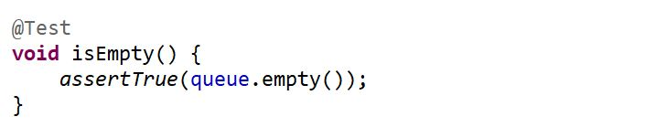
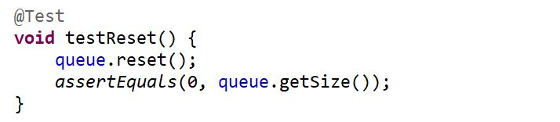
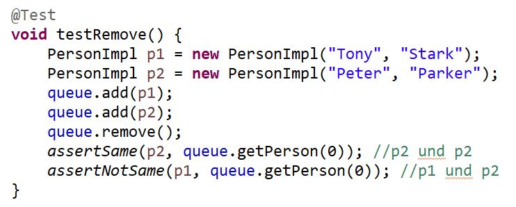
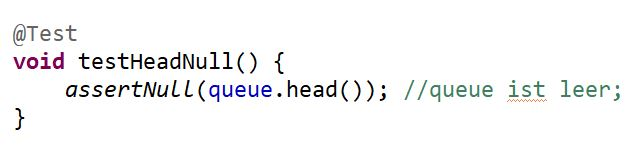
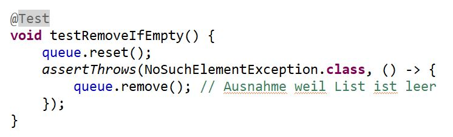

| Assertionstyp |
Beispiel |
Erklärung |
| assertTrue & assertFalse |
 |
keine Ausgabe zu definieren, sie handeln sich als
boolean-Methode: ob das Resultat richtig oder falsch ist; |
| assertEqual & assertNotEqual |
 |
die Analoge von .equals-Methode, die die Werten von
Objekten vergleicht; |
| assertSame & assertNotSame |
 |
die Analoge von == Methode. Die Resultate sind „same“,
wenn sie dieselbe Addresszeile haben; |
| assertNull & assertNotNull |
 |
prüft ob die Ausgabe eine Null-Wert hat; |
| assertThrows |
 |
bekommt eine erwartete Ausnahme (Exception) als erstes
Parameter und unsere Methode ruft Ausnahme als zweites
Parameter. Wenn eine Ausnahme eines anderen Typs aufgeruft wird,
ist unser falsch durchgelaufen ist; |